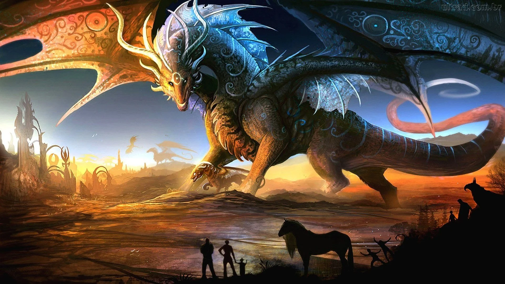
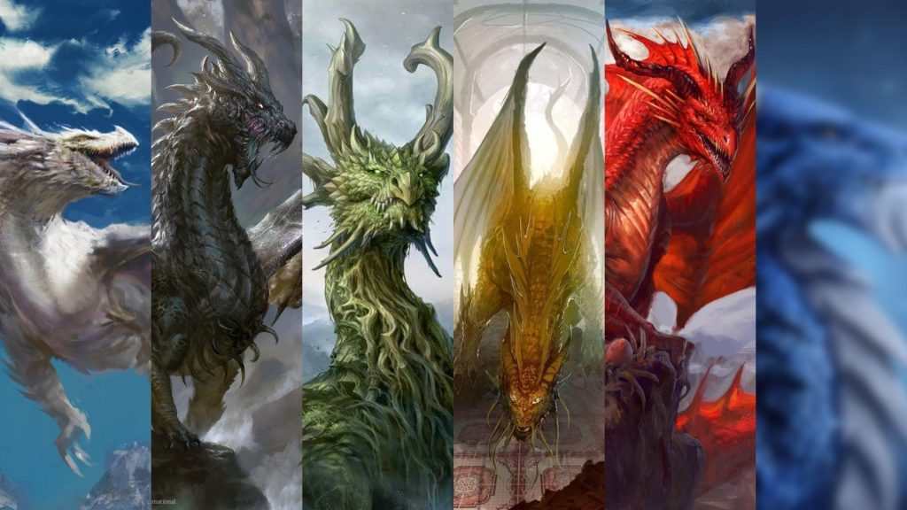

World
A World Of Mystical Dragons
Os dragões são imensos répteis alados pertencentes a uma das raças mais antigas que existem na mitologia.
São conhecidos por seu enorme tamanho e seus poderes mágicos. Os dragões podem ser classificados pela cor de suas escamas. Dentro de cada espécie de dragão há categorias que se estabelecem pela idade destes seres. O poder destes vai aumentando com os anos, de maneira que quando adultos são, provavelmente, as criaturas mais poderosas da mitologia.

Dragão Místico Do Oriente Negro
São seres independentes que raramente vivem em comunidade. Preferem ter seu próprio lar, normalmente grandes cavernas, onde guardam seus pertences e tesouros. Seu tesouro é a coisa mais valiosa para um dragão, costuma fazer enormes pilhas de ouro e joias e deitar sobre elas admirando-as.
História

Criaturas mágicas e seres fantásticos rondam a imaginação da humanidade desde que aprendemos a contar histórias e a criar símbolos para entender fenômenos da natureza e outros acontecimentos até então inexplicáveis. Os dragões aparecem em registros históricos ao redor do mundo, desde os celtas até os chineses. Acadêmicos acreditam que a figura do réptil alado tenha aparecido de forma independente em diferentes partes do mundo, como na Europa e na China. Acredita-se que fósseis de antigos répteis, dinossauros e baleias descobertos por nossos antepassados tenham inspirado a maneira como, hoje, conhecemos os dragões, visto que foram até mesmo encontradas pinturas rupestres de seres que se assemelham a esses animais. Outra teoria é a de que animais como cobras e crocodilos serviram de inspiração para que nosso fértil imaginário concebesse a ideia de uma criatura que fosse híbrida e, em alguns casos, tivesse até poderes mágicos ou habilidades únicas. Inclusive, a origem da palavra "dragão", como conhecemos hoje, vem do grego e significa serpente gigante.